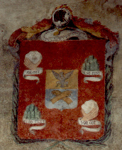

|
Casata dei marchesi |
| |
Casata dei marchesi |
lo stemma della Casata
Sul muro della casa
diroccata all'inizio di via Corridoni, entrando in Zivido, si vede il rimasuglio di
cellophan che ricopriva lo stemma restaurato dall'Associazione Culturale Zivido con il
contributo finanziario del Lions Club di San Giuliano/San Donato Milanese ed inaugurato in
occasione della terza edizione del Corteo Storico "Ritornano i Giganti" nel
settembre 1993 alla presenza delle Autorità cittadine e straniere. |
| Descrizione araldica: Inquartato al primo e quarto di rosso naturale sostenuto da una
mano in carnagione cinta al polso da un nastro d'argento col motto "Also Fest"
di nero; al secondo e terzo di rosso al carciofo al naturale fiorito d'oro, cinto al gambo
da un nastro d'argento col motto "Vor Got" di nero. Il motto "Also Fest Vor Got" è in germanico medievale e significa: "Sempre Forti Davanti a Dio" (di Giancarlo Cattaneo - 02.05.1996) |
 |

sito di proprietà della Associazione Culturale Zivido
webmaster pierino@snet.it